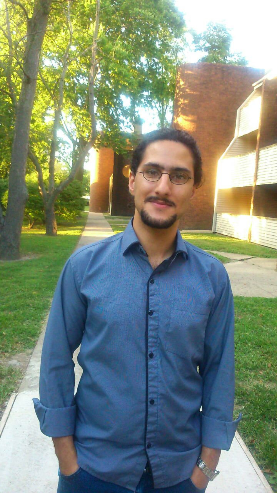

Nima Rasekh's Academic Home Page

(deutsche Version)
I am currently a postdoctoral researcher at the Max Planck Institute for Mathematics in Bonn and QF Fellow at Zaiku Group. I am currently on the academic job market, seeking tenure track positions.
For more information about me check out:
I am a homotopy theorist, meaning I like to understand how two things are equal. Homotopical thinking has already found many applications throughout mathematics, such as algebra, geometry and mathematical physics, and I am always excited about finding new applications and connections.
If you want get a better sense of homotopical thinking you can check out this excellent article by Emily Riehl discussing the rise of higher category theory or this other general science article about the nature of equalities.
In my passion to make homotopical thinking more accessible to a wider range of mathematicians and computer scientists I am also pursuing formalization of mathematics and particularly homotopical structures. You can find my work on my Github page.
I have also taught a course focused on homotopy theory and higher category theory that I would like to expand upon in the future. In the meantime you can find the lecture notes for my course.
Before coming to Bonn I spent three years as a collaborateur scientifique (postdoctoral researcher) at the École Polytechnique Fédérale de Lausanne working in the research group of Kathryn Hess. I was a PhD student at the University of Illinois at Urbana-Champaign, where I worked with my advisor Charles Rezk.
Email: rasekh [at] mpim-bonn.mpg.de
Office: B25
Address:Vivatsgasse 7, 53111 Bonn
Here is a summary of some of my ongoing research projects and formalizations that I am pursuing:
- Limits in (∞,n)-Categories (joint with Lyne Moser and Martina Rovelli) Paper 1 - Paper 2 - Paper 3 - Paper 4 - Talk Slides - Talk Recording (by Lyne Moser):
Developing a theory of limits for weak models of (∞,n)-Categories using double categorical methods and cones, generalizing both recent two categorical developments, as well as (∞,1)-categorical notions of limits, and demonstrating consistency with strict definition of (∞,n)-limits. The definition can be found in the paper (∞,n)-Limits I: Definition and first Consistency Results and the comparison to the strict notions in the paper (∞,n)-Limits II: Comparison across models. As part of the work we also completed two papers establishing the necessary (∞,n)-categorical background: A homotopy coherent nerve for (∞,n)-categories and An (∞,n)-categorical straightening-unstraightening construction.
- Geometric Structures on Condensed Anima (joint with Qi Zhu) Talk Notes:
Establishing relevant topos theoretic properties of condensed anima, which play an important role in the context of condensed mathematics established by Clausen and Scholze.
- Formalizing Double Categories in Coq Unimath (joint with Benedikt Ahrens, Paige North and Niels van der Weide) Talk Slides 1 - Talk Slides 2 - Talk Notes:
Formalizing double categories in Coq UniMath with the goal of establishing appropriate univalence principles. An overview of various notions of univalent double categories can be found in our two papers Univalent Double Categories and Insights From Univalent Foundations: A Case Study Using Double Categories.
- Formalizing ∞-Categories in Rzk:
Contributing to the formalization of ∞-categories via the proof assistant Rzk first started by Nikolai Kudasov, Emily Riehl and Jonathan Weinberger building on a type theoretic work of Riehl & Shulman and Buchholtz & Weinberger.
- ∞-Categories in Non-standard Mathematics Talk Notes 1 - Talk Notes 2 - Talk Recording:
Studying properties of ∞-categories internal to ∞-topoi with non-standard internal logic, which generalizes results by Martini & Wolf and builds on my work on filter quotient ∞-topoi.
A chronological list of my papers can be found on my ArXiv page or my Google Scholar page. Thematically, my work breaks down into three broad themes:
Formalization of Homotopy Theory:
- Insights From Univalent Foundations: A Case Study Using Double Categories - Formalization in Coq Unimath,
joint with Benedikt Ahrens, Paige North and Niels van der Weide:
We continue our study of univalence properties of various notions of double categories. As part of that effort we more generally introduce the "Univalence Maxim" for categorical structures, establishing a correspondence between categorical notions and equivalences. With this method we in particular obtain strict double setcategories (invariant under isomorphisms), pseudo double setcategories (invariant under isomorphisms), univalent pseudo double categories (invariant under vertical equivalences), Verity double bisetcategories (invariant under isomorphisms) and univalent Verity double bicategories (invariant under gregarious equivalences).
- Univalent Double Categories - Formalization in Coq Unimath - Talk Slides 1 - Talk Slides 2 - Talk Notes,
joint with Benedikt Ahrens, Paige North and Niels van der Weide,
Published in Certified Programs and Proofs 2024, doi:
We introduce a notion of univalent double category motivated by pseudo double categories. In particular, we consider several equivalent definitions, construct non-trivial examples, and construct the univalent bicategory of univalent double categories.
- Constructing Coproducts in locally Cartesian closed ∞-Categories - Talk Slides - Talk Recording,
Published in Homology, Homotopy and Applications, doi:
joint with Jonas Frey:
We show that locally Cartesian closed ∞-categories with subobject classifier have an initial object and coproducts generalizing a well-known result in elementary topos theory.
- Univalence in Higher Category Theory:
We study univalence in locally Cartesian closed ∞-categories using internal ∞-categories (as complete Segal objects), generalizing a definition by Gepner and Kock in the presentable setting.
- Filter Quotients and Non-Presentable (∞,1)-Toposes - Talk Notes - Slides 1 - Slides 2,
Published in Journal of Pure and Applied Algebra, doi:
We generalize the filter quotient construction from elementary toposes to (∞,1)-categories to construct new non-presentable (∞,1)-toposes.
- Truncations and Blakers-Massey in an Elementary Higher Topos - Talk Notes - Slides 1 - Slides 2 - Slides 3 - Talk Recording:
We prove that every elementary higher topos has a universal truncation functor using the join construction. Moreover, we show it satisfies the Blakers-Massey theorem.
- Yoneda Lemma for Elementary Higher Toposes:
We prove that every object in an elementary higher topos embeds into its ``object of maps''. This corresponds to the Yoneda lemma for spaces.
- Every Elementary Higher Topos has a Natural Number Object - Talk Notes - Slides,
Published in Theory and Applications of Categories:
We compute the loop space of the circle and use that to show that every elementary higher topos as a natural number object and internal countable limits and colimits.
- A Theory of Elementary Higher Toposes - Talk Notes:
We define an elementary higher topos and show it generalizes elementary toposes and higher toposes.
- Complete Segal Objects - Talk Notes - Talk Recording (from Workshop in the Fields Institute):
We define an internal version of a higher category and show it has the same characteristics as a higher category (such as objects, morphisms, composition, ...). Then we use it to define univalence.
Limits in (∞,n)-Categories:
- (∞,n)-Limits II: Comparison across models,
joint with Lyne Moser and Martina Rovelli:
We show that our definition of limits in weak models of (∞,n)-categories is consistent with strict definitions of limits due to Shulman.
- (∞,n)-Limits I: Definition and first Consistency Results,
joint with Lyne Moser and Martina Rovelli:
We present a definition of limits in an (∞, n)-category, that both generalizes 2-categorical and (∞, 1)-categorical limits.
- An (∞,n)-categorical straightening-unstraightening construction,
joint with Lyne Moser and Martina Rovelli:
We generalize the straightening construction, originally due to Lurie, to the setting of (∞,n)-categories by constructing a Quillen equivalence between strictly enriched functors out of the categorification and double (∞,n-1)-fibrations over a given n-Segal precategory.
- A homotopy coherent nerve for (∞,n)-categories,
joint with Lyne Moser and Martina Rovelli,
Published in Journal of Pure and Applied Algebra, doi:
We construct a homotopy coherent nerve from enriched categories to Segal categories and prove it gives us a Quillen equivalence.
- Twisted Arrow Construction for Segal Spaces,
joint with Chirantan Mukherjee:
We give an explicit description of the twisted arrow construction in the setting of complete Segal spaces using only basic features of the complete Segal space model structure.
- Yoneda Lemma for D-Simplicial Spaces-Talk Recordings-Talk Slides:
We define Cartesian fibrations for several models of (∞,n)-categories, such as n-fold complete Segal spaces. We study various properties of these fibrations and in particular prove a Grothendieck construction.
- Quasi-Categories vs. Segal Spaces: Cartesian Edition,
Published in Journal of Homotopy and Related Structures, doi:
We generalize the equivalence between quasi-categories and complete Segal spaces due to Joyal and Tierney to an equivalence between the Cartesian fibrations.
- Cartesian Fibrations of Complete Segal Spaces,
Published in Higher Structures, doi:
We define a notion of Cartesian fibrations for complete Segal spaces using the complete Segal object approach to right fibrations.
- A Model for the Higher Category of Higher Categories,
Published in Theory and Applications of Categories:
We construct complete Segal spaces which model simplicial spaces, Segal spaces, complete Segal spaces and spaces along with their universal fibrations.
- An Introduction to Complete Segal Spaces:
This is a very intuitive introduction to higher category theory via complete Segal spaces. It discusses subjects such as composition, functoriality, adjunctions and colimits.
- Cartesian Fibrations and Representability -Talk Notes 1 - Talk Notes 2 - Talk Notes 3,
Published in Homology, Homotopy and Applications, doi:
We introduce a new method to study the representability of Cartesian fibrations, generalizing existing representability results for right fibrations. This in particular permits us to define representable Cartesian fibrations.
- Yoneda Lemma for Simplicial Spaces,
Published in Applied Categorical Structures, doi:
We study the theory of left fibrations over simplicial spaces, by showing that left fibrations are fibrant objects in a model structure. We use that to prove the Yoneda lemma for simplicial spaces.
Homotopy Coherent Hochschild Homology:
- Shadows are Bicategorical Traces-Talk Recordings-Other Talk Recordings-Talk Slides-Other Talk Slides
joint with Kathryn Hess:
We characterize shadows, originally due to Ponto, as enriched THH and use that to give an alternative proof for Morita invariance.
- The cotangent complex and Thom spectra,
Published in Abhandlungen aus dem Mathematischen Seminar der Universität Hamburg, doi
joint with Bruno Stonek:
We use the results in the previous paper to compute the cotangent complex of Thom spectra, generalizing a result by Basterra and Mandell. As part of the work we also compare various definitions of cotangent complexes that can be found in the literature using methods from Goodwillie calculus.
- Thom spectra, higher THH and tensors in ∞-categories-Talk Notes-Slides,
Published in Algebraic & Geometric Topology, doi
joint with Bruno Stonek and Gabriel Valenzuela:
We compute tensor and in particular THH of Thom spectra using tensors of presentable ∞-categories, building on work of Gepner, Groth and Nikolaus and generalizing and streamlining a result by Schlichtkrull.
Other Work:
- Analyzing RGB Images using Topology with Ruth Davidson, Chuan Du, Rosemary Guzman, Adarsh Manawa and Christopher Szul:
In this talk we discuss how to use a code developed at Australian National University to do image analysis with discrete Morse theory. We show how to use the code in two different scenarios: water scarcity and crime data.
- RGB image-based data analysis via discrete Morse theory and persistent homology with Ruth Davidson, Chuan Du, Rosemary Guzman, Adarsh Manawa and Christopher Szul:
We use a code developed at ANU that can detect fundamental topological features of a grayscale image and enhance it so that it can also analyze RGB images. As a result we can perform data analysis directly on RGB images representing water scarcity variability as well as crime variability.
- An Introduction to TFTs:
This is a talk I gave in the graduate student homotopy seminar. I introduce the basic notions of topological field theories and show that even simple computations necessitate using higher categorical tools.
- A New Approach to Straightening:
These are my slides for the talk I gave in GSTGC (Graduate Student Geometry Topology Conference) 2016. I show a method to introduce the unstraightening construction to a larger mathematical audience.
- I took my preliminary exam March 3rd, 2015. Here is my prelim syllabus and the slides of my prelim talk.